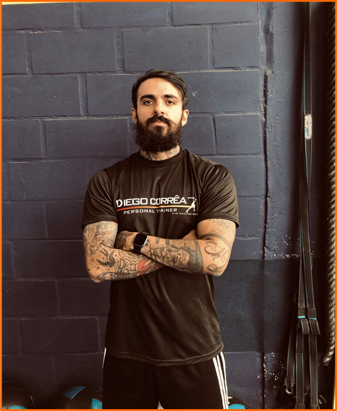

Olá! Meu nome é Diego Corrêa, sou um profissional de educação física de Pouso Alegre-MG
Graduado pelo Centro Universitário de Itajubá, Instituição com nota máxima no mec (5/5), atua com musculação e com o treinamento funcional.
Também tem um grande apreço pelo LPO e POWERLIFTING, e atráves da ciência, busca promover o máximo de desempenho físico, saúde e bem estar de seus alunos.
- Controle e redução do peso corporal
- Diminuição do perso gordo
- Aumento ou manutenção do peso magro(massa muscular ou óssea)
- Melhora da condição cardiorespiratória